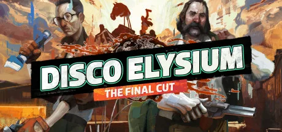
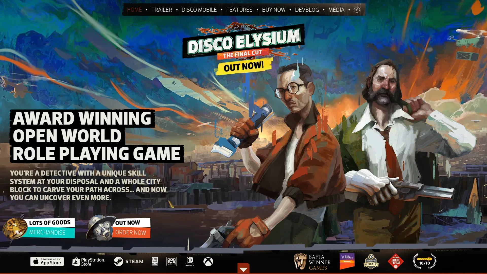

开创性等距视角侦探 RPG，以独特的思维内阁系统和文学级写作闻名，获 4 项 TGA 大奖。


想象一座失败之城 Revachol——架空 Innocentic 历法某个年代，酷似 70-80 年代东欧的后革命时代（工人革命失败之后的几十年）。你身处马丁内斯区——破败海滨贫民区：废弃货运起重机锈成赭色、罢工纠察线在凛冽海风里飘了半年、生锈渔船在油毡码头边咯吱响。世界外缘有一种叫淡色 The Pale的超自然现象正在缓慢侵蚀现实——人类记忆和物质本身都在淡色里溶解。ZA/UM 用表现主义油画质感把整座 Revachol 浸在湿冷赭灰里。
你是Harry Du Bois——一名严重酒精中毒、严重失忆的中年警探。游戏开场你在马丁内斯区一家酒店房间酒醒——连自己叫什么都忘了，房间一片狼藉，旁边躺着一具悬挂在树上的尸体，这是你来调查的命案。搭档 Kim Kitsuragi 是另一城市派来的冷静的中型车爱好者，他对你保持令人尊敬的克制——但眼神里那一点失望已经能把人砸碎。你脑子里 24 个内心人格在争吵：百科全书想引经据典、戏剧表演想哭闹、电气化学想再来一杯酒。
那次你第一次让百科全书技能在心里跳出来朗诵半页革命史的瞬间，ZA/UM 把 RPG 第一次推到政治哲学诗的高度——你打的不是骰子，是和你脑子里某个不肯沉默的死人对话；那场你和码头罢工队员被反问起 50 年前革命到底为什么失败的桥段——24 项内心技能让一段对话变成意识形态解剖室；那次你在镜子前选择把自己重塑成哪种人的对话节点——你穿什么衣服、相信什么主义、要不要再喝一杯，每个选择都让 Harry 离最初那个昨夜醉醒的废人更远。这不是关于破案的故事，是「我现在还有没有可能重新成为一个人」的故事——尸体还挂在树上，今天去问哪扇门？
表现主义油画 × 后革命废墟，是爱沙尼亚独立工作室 ZA/UM 把20 世纪初表现主义油画质感（厚重笔触、色块呼吸、扭曲透视、潮湿赭灰色调）和后革命时代东欧废墟质感（罢工纠察线、油毡屋顶、苏维埃式公寓、生锈起重机）反差缝合在政治哲学诗化侦探叙事外壳里的混血美学。底色是俄国构成主义+爱德华·霍珀的孤独都市夜画双线交织；变异在于UI 用打字机字体+扑克牌肖像把对话做成意识形态法庭。色彩锁定赭灰 + 革命红 + 淡色苍白三色组合。
「表现主义+政治哲学叙事」的视觉线跨越百年。1907 年挪威画家蒙克和欧洲表现主义运动定义厚重笔触+情绪色块视觉源头。1920 年代俄国构成主义（El Lissitzky/Rodchenko）的政治海报+几何版面定义革命视觉语言——本作 UI 直接化用。1942 年爱德华·霍珀的夜鹰等都市孤独油画定义现代孤独视觉。1925 年卡夫卡的《审判》《城堡》定义官僚-荒诞文学母版——失忆警探调查的精神祖父。1979 年塔尔可夫斯基《潜行者》定义诗化电影时空。1995 年《十二猴子》把记忆-时间-精神异化推到主流。2019 年《极乐迪斯科》正式发售。2021 年《最终剪辑版》全语音化（百万字级配音）。
基于体验清单 · 审美偏好 · IP故事三维度综合选出